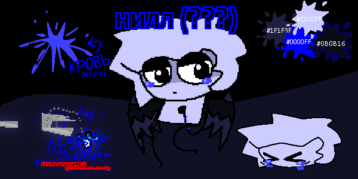

Нилл (???)

референс альт-нилла
вид :: человек (???)
ДР :: 06.02.2010 (???)
пол :: мужской (???)
рост :: 138 (???)
вес :: 25 (???)
прошу!! эта музыка является темой персонажа. для более глубокого погружения в эстетику персонажа лучше всего включить это на фон. приятного чтения! :3
инфо
альт-эго нилла.
как персонаж
если нилл является только положительным персонажем, то его альт-сторона полностью отрицает это. альт-нилл максимально злая и отстранённая особа.
альт-нилл понимает, что он ужасный человек, но его отчаяние не позволяет что-либо делать с этим
альт-нилл символизирует отчаяние, лень, гнев и похоть.
внешность
он почти ничем не отличается от простого нилла за исключением больших глаз, больших демонических крыльев и ран на руках. также, зачастую он показан со слезами цвета его крови.
появления
альт-нилл появлялся на некоторых рисунках в ТГК и в ютуб канале нилла.
интересные факты
>>> альт-нилл является сатанистом
>>> альт-нилл питает состояние своего положительного аналога